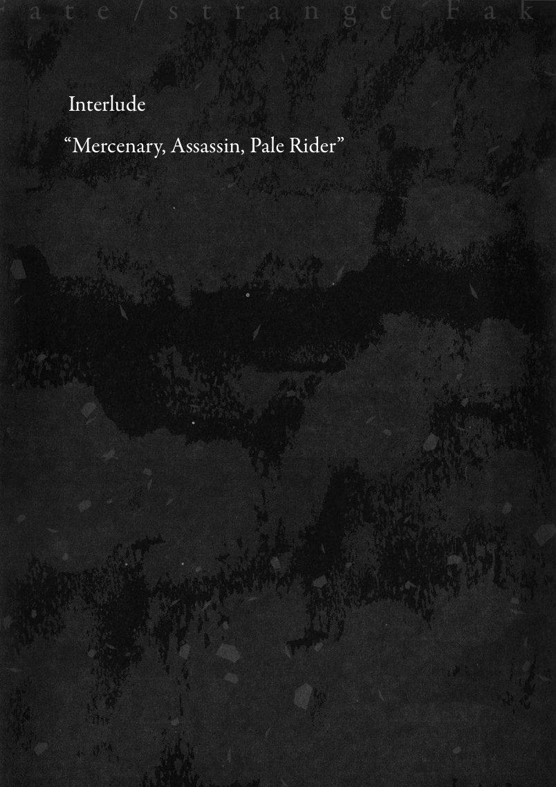
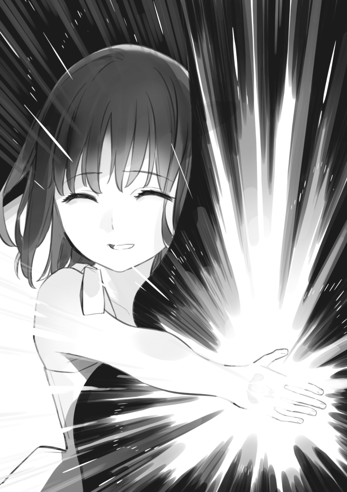

"Fico feliz que vocês dois estejam melhor agora!"
A voz inocente de uma menina ressoou no jardim banhado por um sol morno. Esquilos, gatinhos e outros pequenos animais corriam pelo gramado aparado com esmero, e incontáveis passarinhos empoleirados nos galhos da árvore que crescia no jardim faziam um modesto recital.
Se a palavra "aconchegante" tomasse forma física, provavelmente seria uma cena assim. Diante deles, uma paisagem que só se vê em livros ilustrados se desdobrava na realidade. As duas pessoas a quem a menina se dirigira, porém, destoavam completamente daquela atmosfera.
Uma delas era um jovem vestido de preto. Ainda havia traços infantis em seu rosto, e seria perfeitamente cabível chamá-lo de garoto. Mas, em contraste com sua aparência, ele usava um arsenal perturbador de armas, pistolas, facas e outros instrumentos presos ao corpo.
A outra era uma garota, também inteiramente vestida de preto. Sob o manto negro, que ocultava o máximo possível de seu rosto e de sua pele, ela examinava os arredores com um leve ar de confusão. Se fosse só isso, pareceria uma mulher comum usando niqab, mas as dobras negras da roupa escondiam incontáveis armas, e havia nela algo, sem relação com a vestimenta, que transmitia uma impressão geral de perigo.
O nome do jovem era Sigma. A garota era um Servo invocado na classe Assassin, na "Guerra do Santo Graal Falsa". Uma série de circunstâncias os levara a agir juntos, mas, naquele momento, ambos se encontravam presos naquele espaço estranho.
"É, obrigado."
"...Tem a minha gratidão."
Sigma e a garota Assassin agradeceram cada um a seu modo. A menina, Kuruoka Tsubaki, reagiu ficando corada e correndo desajeitadamente de volta para dentro de casa.
"...Então aquela era Kuruoka Tsubaki."
"Então é essa a garota que comandou um Espírito Heroico enquanto estava inconsciente."
Os dois já haviam percebido. Os pais da menina, que moravam com ela naquela mesma casa, estavam claramente sob controle mental de alguma coisa... mas só a garota era diferente.
Ela não estava sob qualquer restrição mental, era de fato livre.
"Ou seja... aquela figura negra... era o Servo dela."
A grande figura que Kuruoka Tsubaki apresentara como "Sr. Preto". Pálidos brilhos flutuavam aqui e ali dentro daquela massa de sombras, aproximadamente tão alta quanto a árvore do jardim e tão escura que parecia sugar a luz ao redor.
Ela havia recuado para dentro da casa por enquanto, mas não parecia possuir substância real; portanto, não seria surpresa se irrompesse do chão sem qualquer aviso.
Esse pensamento levou Sigma a elevar a guarda e Assassin a afundar em pensamentos.
"Aquilo... era mesmo um Espírito Heroico?"
"Também pode ser um monstro ou um espírito..." murmurou Sigma, mas a garota Assassin balançou a cabeça.
"Não... acho que não. Não senti qualquer vibração de malícia ou ódio vindo daquela entidade... Não, na verdade, não senti flutuação alguma de Energia Mágica..."
O usuário de magia e a Serva se lembraram de como ambos haviam se surpreendido com aquela "sombra" ao despertarem no jardim.
Se fosse hostil, já os teria eliminado. E, considerando que não foram atacados enquanto dormiam, chegaram a pensar que talvez aquilo nem os reconhecesse como inimigos.
"Não sinto nada que se pareça com consciência vindo dela, mas ela parece obedecer àquela criança."
As palavras de Assassin levaram Sigma a ampliar suas especulações.
"Talvez o Servo dela seja outra coisa, e essa 'sombra' seja um familiar...?"
"É possível... mas nos faltam informações suficientes. Aquele demônio, o hematófago, deve saber de alguma coisa..."
Assassin rangeu os dentes sob o véu. Mas ela tampouco conseguia sentir a presença do hematófago. Era certo que ele tramava algo, porém seria difícil localizá-lo a menos que ele mesmo se manifestasse.
Os dois haviam acabado de inspecionar a área sob o pretexto de dar um passeio, mas encontraram poucos sinais de vida humana.
Avistaram vez ou outra figuras humanas, mas, assim como os pais de Kuruoka Tsubaki, elas pareciam submetidas a algum tipo de controle mental.
Era possível conversar com elas, mas só isso. Não pareciam particularmente alarmadas com o armamento de Sigma, nem davam a impressão de saber coisa alguma sobre aquele mundo.
Fizeram várias perguntas, mas as pessoas eram civis comuns, apáticas, e não conseguiram arrancar delas nenhuma informação útil.
Havia apenas um ponto em comum: a maioria dos que circulavam por ali dizia ter vivido no distrito fabril, de onde fugira por causa de um incêndio ou de outro desastre.
"O incêndio na fábrica... ouvi falar disso ontem. Uma batalha entre Espíritos Heroicos."
Segundo o que ouvira de Watcher antes de perder contato, um Espírito Heroico que não estivera envolvido na luta ocultara os danos do distrito fabril destruído, mas, ao que parecia, não fora capaz de apagar completamente o fato de que um incêndio ocorrera.
Mesmo assim, os moradores haviam demonstrado um comportamento estranho e pareciam, tal como os pais de Kuruoka Tsubaki, estar sob algum tipo de controle mental.
Poderiam ter levado a investigação adiante tomando atitudes destrutivas contra aquelas "pessoas" e aquela "cidade". Mas, como não entendiam a estrutura daquele mundo nem as capacidades do inimigo, fazer isso seria suicídio.
Sigma ponderou friamente e decidiu investigar a partir do fato de que telepatia ainda funcionava.
"Civis comuns não vão entender a situação, estejam ou não sob controle mental."
"Mas... e um mago que conheça o lado oculto da Guerra do Santo Graal?"
"Quer me perguntar alguma coisa?" disse o pai de Kuruoka Tsubaki, com os olhos um tanto vazios.
"...Sim. De preferência, num lugar afastado da sua filha."
O mago, que viera até a porta da frente por sugestão de Sigma, lançou um olhar para dentro da casa e respondeu:
"Isso pode ser complicado. Prometi à minha filha que leria um livro para ela, então não posso me afastar muito."
"Ah, até o fim da rua já serve."
"Entendo. Nesse caso..."
Sem oferecer resistência real, o pai de Tsubaki deixou a propriedade da família e seguiu Sigma até um pequeno parque no meio do bairro residencial.
"Foi mesmo coincidência termos ido parar na sua casa, mas eu o reconheço, Kuruoka Yūkaku."
"Oh... Nós nos conhecemos de algum lugar?"
"Minha empregadora se chama Francesca. Tenho um acordo com um homem chamado Faldeus."
Ao ouvir isso, o rosto de Kuruoka Yūkaku assumiu uma expressão sombria.
"Imaginei que você fosse um usuário de magia quando vi seu equipamento. Vejo que eu estava certo... Mas, como já disse a Faldeus, a Guerra do Santo Graal é a última coisa na minha mente agora. Não posso lhes dar..."
"Não, não estou pedindo que coopere conosco", cortou Sigma, impassível. "Só quero que nos diga o que está acontecendo."
Seu tom era educado, mas destituído de emoção. Sigma assumira a postura de um mercenário usuário de magia diante de outro mago, pronto para reagir a um ataque súbito.
Assassin permanecia oculta num canto do parque, vigiando a área. Já que a conversa era possível, o plano deles era medir as intenções da entidade que exercia o controle mental a partir das informações que conseguissem obter de Kuruoka, ou, em sentido inverso, das informações que ele fosse incapaz de lhes revelar naquele estado.
No entanto...
"Sim, posso dizer isso. Pelo que consigo ver, o Servo que protege minha querida Tsubaki criou este mundo de propósito. Isso foge à minha especialidade, mas creio que possa se tratar de uma espécie de Projeção de Realidade."
"...?"
"O Servo de Tsubaki provavelmente é a personificação de um conceito. Eu diria que é o conceito de morte, vazio ou doença a quem foi deliberadamente dada personalidade. No Japão, meu país de origem, existe um yokai chamado 'yanari', criado para explicar o rangido das casas. Era um tipo de magia folclórica: decidir que aquilo era um ser consciente, dar-lhe forma e tomar medidas mentais contra ele... Considerando o poder desse Servo, porém, acredito que deva ser uma entidade reconhecida em escala global. Acho que conseguiria analisá-lo com mais precisão se o examinasse com cuidado, mas, como abandonei a Guerra do Santo Graal para viver em paz com minha filha, não tenho tempo para isso."
Calmamente, casualmente, como se aquilo não tivesse importância alguma, Kuruoka Yūkaku começou a expor sua opinião como mago.
Mas, apesar disso, sua maneira de falar deixava claro que ele ainda estava sob controle mental.
Não o impediram de falar sobre magia... nem sequer de especular sobre a identidade do Servo?
Ou será que o estão controlando justamente para nos passar informações falsas? Mas, se fosse isso, não tornariam o alcance desse controle mais ambíguo?
Sigma confiava na própria experiência e na técnica como usuário de magia para perceber mentiras de pessoas comuns.
Mas, descobrir as mentiras de um mago, sobretudo de um que tivesse usado autossugestão para se convencer de que falava a verdade, exigiria muito mais experiência, talento e magia especializada.
Se eu estivesse conectado a Watcher, poderia cruzar isso com as informações das sombras e chegar a uma conclusão...
Watcher, o Servo de Sigma, deveria estar recolhendo informações visuais e auditivas de toda a cidade, mas, no momento, Sigma era incapaz de entrar em contato com ele.
Era por isso que ele precisava, custasse o que custasse, de informações que o ajudassem a sair dali, mas para isso ainda precisava de mais.
"Você não quer sair desta barreira?"
"Sair para quê? Nossa filha Tsubaki está tão saudável aqui."
"Não é possível que o Servo esteja controlando sua mente para que você pense assim?"
"Oh, sim, provavelmente está... Mas o que há de errado nisso?"
Quando ouviu aquilo, Sigma compreendeu qual era o objetivo do controle mental. Se o Servo de Kuruoka Tsubaki estava por trás da situação, então, muito provavelmente, aquele Espírito Heroico não agia para vencer a Guerra do Santo Graal.
Seu comportamento estava genuinamente centrado em Tsubaki.
Mas ele continua sendo tecnicamente um mago participante da guerra. Deve ter tomado pelo menos alguma precaução contra controle mental...
Sigma pensou isso, mas sabia também que tais precauções não eram perfeitas.
Houve um caso em que magos habilidosos reunidos para um leilão de artefatos históricos de valor místico foram traídos e manipulados por um de seus próprios aliados.
Aparentemente, esses magos acabaram sendo resgatados por um Lord da Torre do Relógio e, envergonhados com o próprio fracasso, matricularam membros dignos de confiança de suas famílias nas aulas desse Lord.
Sigma se lembrava dessa história porque a ascensão do referido Lord, graças às conexões que formara com magos poderosos nesse processo, fora assunto recorrente entre mercenários usuários de magia por um tempo... mas descartou os detalhes como irrelevantes no momento.
O importante era que, diante da oportunidade certa, precauções contra controle mental podiam ser facilmente quebradas.
Convencê-lo a fugir ou libertá-lo do controle mental... parece inviável. Depois pergunto à Assassin se ela tem algum Fantasma Nobre capaz de desfazer lavagem cerebral... mas, pelo que vi, os Fantasmas Nobres dela parecem especializados em matar inimigos. Melhor não alimentar esperanças.
Sigma decidiu tentar outra abordagem.
"...Hum, o senhor sabe que sua filha está sendo visada do lado de fora da barreira?"
"Oh... Está? Isso é lamentável."
Kuruoka Yūkaku começou a deixar o parque, voltando para casa. Não parecia especialmente aflito, mas sua expressão ao menos se ensombreceu com preocupação.
"Obrigado por me avisar. Ainda assim, o Servo de Tsubaki parece estar no processo de se tornar praticamente invencível, então tenho certeza de que vai protegê-la até o fim."
"Está... se tornando invencível?"
"Sim. Pouco antes de vocês acordarem, ele nos mandou um cachorro de guarda maravilhoso."
"Como assim?" perguntou Sigma no instante em que Assassin se aproximou dos dois. Sigma tentou deter Yūkaku, que o ignorava enquanto seguia em direção à casa, mas viu a expressão sombria nos olhos de Assassin, concluiu que algo devia ter acontecido e resolveu parar para ouvi-la.
"O que houve?"
"...Parece que a sua conversa foi... ouvida."
"...?"
"Quando você disse 'Tsubaki está sendo visada', ele começou a se mover."
Enquanto falava, Assassin voltou o olhar para a casa de Tsubaki. Quando Sigma seguiu a direção daquele olhar... o tempo congelou para ele.
Seu cérebro foi incapaz de compreender a situação. Por frações de segundo, sua mente ficou em branco. E o que produziu isso num usuário de magia como Sigma, um homem com longa experiência como mercenário... foi um único cachorro enorme.
Embora se pudesse discutir se aquilo contava mesmo como "um único" cachorro.
Sigma já tinha visto a coisa que agora se encontrava exatamente no ponto para onde Kuruoka Yūkaku caminhava com tanta naturalidade.
Demorou um instante, no entanto, para perceber que era a mesma coisa. Tinha certeza de que "aquilo" fora morto na Rua Principal e também de que seu tamanho não passava do de um elefante adulto.
Aquilo que Sigma e Assassin agora erguiam os olhos para encarar, já sentindo um suor frio despontar...
Era Cérbero, o cão de guarda tricéfalo de Hades, agora maior do que uma casa.

Snowfield, distrito fabril
"Sobre o seu Fantasma Nobre... Você ainda consegue usar os pássaros e o cão?" perguntou Bazdilot Cordelion, enquanto fazia a manutenção de um Artefato Místico em forma de pistola e membros da família Scladio se ocupavam de reparar seu ateliê.
Alkeides desfez a desmaterialização e encarou as próprias mãos ao responder.
"...Os pássaros não serão problema, mas ativar Cérbero vai ser difícil."
"Existem limitações na regeneração de cada uma das bestas?"
"Não. Em circunstâncias normais, com a sua Energia Mágica eu deveria ser capaz de reativá-las depois de um dia... Mas agora não consigo. Parece que a verdadeira Origem Espiritual dele foi raspada por aquela 'névoa negra', junto com três dos cavalos."
"Você possui um Fantasma Nobre que rouba Fantasmas Nobres, mas nunca imaginei ver um dos seus ser roubado. Ainda assim, o cão ou os cavalos caírem em mãos inimigas não deveria representar problema", disse Bazdilot, impassível.
Alkeides, porém, balançou a cabeça em silêncio.
"Não necessariamente."
"...Há algo que o preocupa?"
"Eles podem ter sido roubados, mas as extremidades das ordens régias de que fui incumbido são a base da minha Origem Espiritual. Mesmo que já não sejam mais meus, eu sei quando passam por alguma alteração."
Franzindo o cenho sob o pano que lhe cobria o rosto, o arqueiro vingativo sondava com cuidado as mudanças nos "elos" de sua Origem Espiritual.
"Mas... isto é..."
Depois de uma curta pausa para pensar, Alkeides cerrou os punhos. Então, enquanto Energia Mágica misturada a lodo e sangue escorria por entre seus dedos, sussurrou com uma raiva silenciosa.
Tudo isso enquanto se lembrava da escuridão familiar do outro lado, que se aproximava dele pelo tênue vínculo de Energia Mágica.
"Pode ser que quem controla aquela névoa negra... seja um parente de Hades?"
Quando por fim relaxou os punhos, murmurou com um quase imperceptível traço de piedade numa voz que nem mesmo Bazdilot conseguiu ouvir.
"Nesse caso... mesmo que eu não a fira... sua Mestre está destinada a ser caçada, cedo ou tarde.
"Caçada pelos verdadeiros heróis... aqueles que protegem o povo."